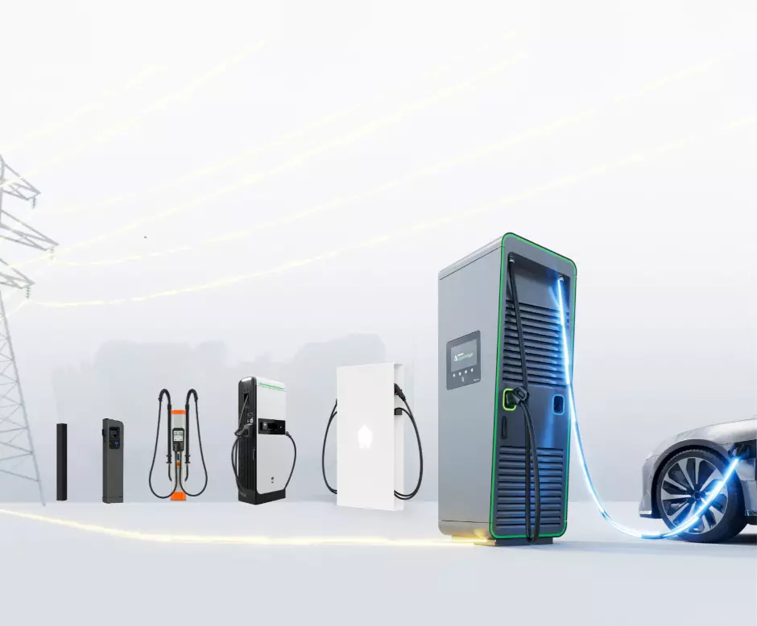

Le chargement rapide est-il mauvais pour la batterie de votre VE ? Ce que la science dit!

Il existe un mythe tenace selon lequel la recharge DC rapide détériorerait gravement la batterie de votre véhicule électrique. Cette idée a longtemps circulé dans les forums, les salles de vente et les réunions de gestionnaires de flotte. La réalité est plus nuancée — et plus honnête. Car « la recharge rapide est totalement inoffensive » n'est pas non plus exact. Dans ce blog, nous passons en revue les données scientifiques les plus récentes. Et nous faisons une distinction que la plupart des articles omettent : les voitures particulières et les camionnettes ne sont pas la même chose que les camions électriques.
Ce que dit la science : les trois études les plus importantes
Geotab — 22.700 véhicules (janvier 2026)
L'étude réelle la plus complète à ce jour. Geotab a analysé les données de santé de batterie de plus de 22.700 véhicules électriques de 21 marques, collectées sur plusieurs années via la télématique de flotte.
Les principaux résultats :
Dégradation annuelle moyenne de la batterie : 2,3% en 2026, contre 1,8% en 2024. La hausse s'explique par le recours croissant à la recharge DC à haute puissance
Véhicules effectuant plus de 40% de leurs sessions au-dessus de 100 kW : 3,0% de dégradation par an — le double des véhicules utilisant principalement la recharge AC ou à faible puissance (1,5%/an)
Une batterie se dégradant à 2,3% par an conserve encore plus de 81% de sa capacité d'origine après 8 ans — largement suffisant pour un usage quotidien
La dégradation due à un niveau de charge extrême (en dessous de 20% ou au-dessus de 80%) ne devient significative que lorsque le véhicule passe plus de 80% du temps à ces niveaux
Source : Geotab EV Battery Health Study, janvier 2026
Recurrent Motors — 13.000 Tesla (2023)
Une étude largement citée n'avait trouvé aucune différence statistiquement significative de dégradation entre les utilisateurs fréquents et peu fréquents de la recharge rapide. C'est l'étude sur laquelle beaucoup d'articles de 2024 s'appuyaient.
Une réserve méthodologique importante s'impose désormais : sur les 13.000 véhicules, seuls 344 étaient classés comme utilisateurs fréquents de la recharge rapide. Ce déséquilibre rend statistiquement impossible de mesurer un effet de manière fiable — l'étude ne l'exclut pas, elle ne disposait simplement pas des données suffisantes pour le démontrer.
Source : Recurrent Auto, recurrentauto.com/research/impacts-of-fast-charging
Idaho National Laboratory — la référence historique (2015)
Quatre Nissan Leaf du millésime 2012, testées pendant un an à Phoenix, Arizona. Deux rechargées exclusivement en DC rapide, deux en AC. Différence de perte de capacité après 50.000 miles : 3 à 9 % en faveur de la recharge AC.
Réserve importante : ces véhicules ne disposaient d'aucun système de refroidissement actif, étaient rechargés deux fois par jour dans une chaleur extrême, et datent d'une génération de chimie de batterie qui n'a guère de points communs avec les véhicules modernes. L'étude reste l'expérience contrôlée la plus citée du domaine, mais elle est peu représentative d'un véhicule électrique moderne dans le climat belge.
Source : Idaho National Laboratory / US Department of Energy
Deux facteurs au moins aussi importants
La température
Une étude publiée dans SAGE Journals en 2025, basée sur 1.320 sessions de recharge réelles, a montré que les températures extrêmes peuvent réduire l'efficacité de recharge de 19 à 27% et augmenter la consommation énergétique des systèmes de gestion thermique de 20 à 25%. Dans le climat belge, cela est moins critique qu'aux extrêmes méridionaux, mais reste pertinent pour les véhicules qui rechargent en plein soleil estival.
Source : Rajesh G. & Sebasthirani K., SAGE Journals, 2025
La chimie de la batterie
Les batteries LFP (lithium fer phosphate) sont thermiquement plus stables que les batteries NMC et présentent une dégradation nettement moindre lors de recharges rapides intensives. De plus en plus de véhicules modernes et de véhicules utilitaires sont équipés de série en LFP — le nouveau Mercedes eSprinter et le DAF XF Electric en sont des exemples. Si vous constituez une flotte aujourd'hui, la chimie de la batterie est un critère pertinent lors de la décision d'achat.
Source : ScienceDirect, juin 2025
Voitures particulières et camionnettes : une stratégie de recharge réfléchie paie
Pour les véhicules légers, la recharge AC offre un véritable choix. Un Renault Master E-Tech avec une batterie de 87 kWh se recharge entièrement en moins de 4 heures à 22 kW AC — parfaitement faisable du jour au lendemain. Le Mercedes eSprinter avec 113 kWh prend un peu plus de 5 heures à 22 kW AC.
Pour les flottes disposant de dépôts fixes et d'itinéraires fixes, la recharge AC de nuit est donc la stratégie la plus respectueuse de la batterie. La recharge DC rapide est réservée aux trajets dont le temps de rotation est trop court pour une recharge nocturne complète, ou pour recharger en cours de route pendant les pauses légales.
Le message de l'étude Geotab est directement applicable ici : celui qui utilise l'AC quand c'est possible et le DC quand c'est nécessaire préserve sa batterie le plus longtemps.
Camions électriques : la recharge DC n'est pas un choix, c'est une nécessité
Pour les camions électriques, la situation est fondamentalement différente. Un poids lourd dispose d'une batterie de 350 à 600 kWh et d'un chargeur embarqué AC de 22 kW. À cette puissance, une charge complète de 525 kWh — comme sur le DAF XF Electric — prend plus de 23 heures. C'est opérationnellement inutilisable. La recharge AC n'est pas une alternative pour les poids lourds : le DC est la seule méthode de recharge praticable.
Cela ne rend pas la question de la dégradation de la batterie moins pertinente pour les camions — bien au contraire. Une batterie de camion de 500 kWh qui se dégrade plus rapidement représente un impact financier bien plus important qu'une batterie de voiture particulière de 75 kWh. Le secteur y répond clairement :
DAF choisit explicitement la chimie LFP pour le XF Electric, précisément parce qu'elle est plus robuste lors de recharges DC intensives
Mercedes-Benz construit l'eActros 600 sur LFP avec un objectif d'une décennie et 1,2 million de kilomètres
Le Volvo FH Electric est conçu pour une recharge de 20% à 80% en 65 minutes à 350 kW, avec des batteries censées durer dix ans
Pour les entreprises de transport, la clé n'est donc pas « rechargez moins vite », mais : choisissez des véhicules à chimie LFP et à système de gestion thermique avancé, planifiez les recharges sur les arrêts naturels comme les pauses légales, et installez un EMS intelligent dans votre dépôt qui répartit la charge sur l'ensemble de la flotte.
Source : documentation technique DAF Trucks / documentation technique Volvo Trucks / analyse de flotte VEV, octobre 2025
Ce qui se prépare
En février 2026, CATL a présenté une nouvelle génération de batteries 5C qui conservent 80% de leur capacité après 1.400 cycles de recharge rapide à 60°C — l'équivalent de 840.000 kilomètres dans une chaleur extrême. Les améliorations proviennent d'un revêtement de cathode amélioré, d'additifs électrolytiques réparant les microfissures, et d'une gestion thermique plus intelligente. Le calendrier de production et la validation indépendante ne sont pas encore confirmés, mais la direction est claire : l'industrie travaille activement à résoudre le problème de dégradation à la source.
Source : InsideEVs / Autoblog, février 2026
Conclusion
Le mythe « la recharge rapide détruit votre batterie » est inexact. Mais « la recharge rapide n'a aucun effet » ne l'est pas non plus. Ce que les données de 2026 indiquent : les batteries modernes sont suffisamment robustes pour durer toute la vie d'un véhicule, même avec des recharges rapides régulières. Celui qui gère consciemment sa stratégie de recharge en tire davantage sur le long terme.
Pour les voitures particulières et les camionnettes : AC quand c'est possible, DC quand c'est nécessaire. Pour les camions électriques, ce choix n'existe pas — le DC est la seule option qui fonctionne, et l'accent est mis sur la chimie de la batterie, la gestion thermique et un plan de recharge intelligent au niveau du dépôt.
Vous souhaitez savoir quelle solution de recharge convient à vos véhicules et à votre site ? Contactez-nous via info@powerland.be ou demandez une étude via notre site web.
Retour à l'aperçu{kind=link}